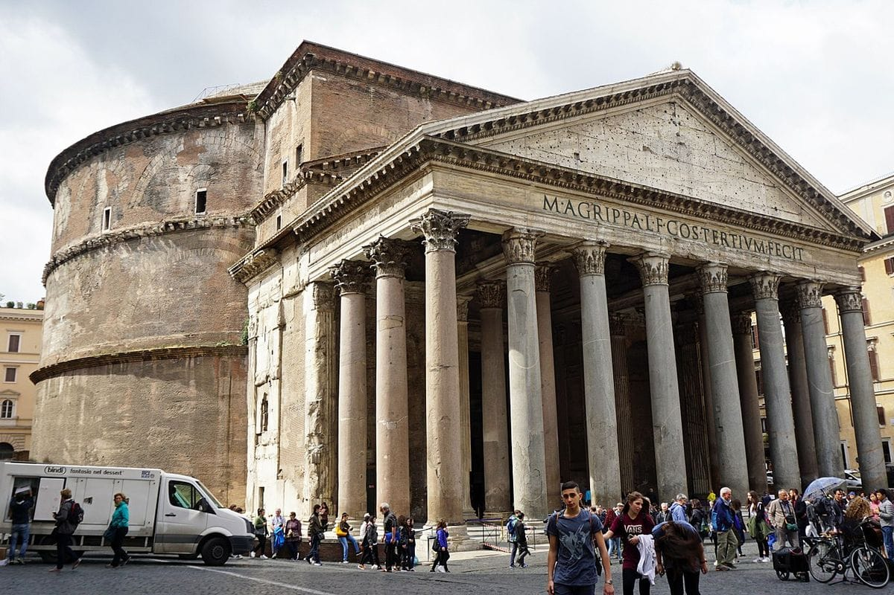
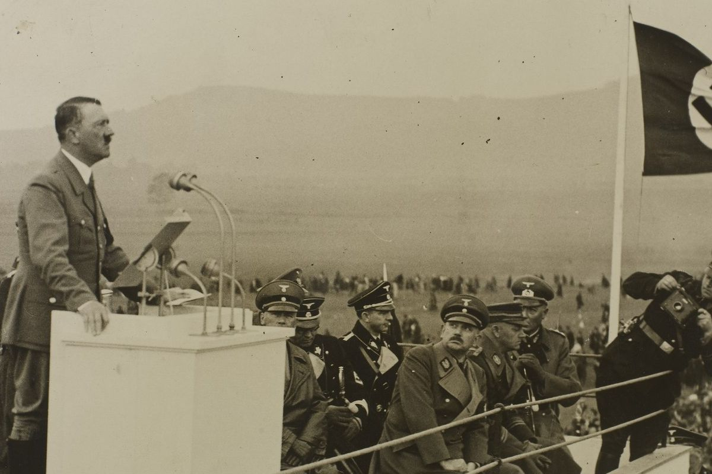

Berita Utama Hari Ini
Rahasia Beton Romawi Bisa Tahan 2.000 Tahun.
Serangan Siber
Indonesia Peringkat 1 Sumber Serangan Siber.

Perang Dunia II
Andai Hitler-Mussolini Menang Perang Dunia II?
Museum Louvre
Terungkap! Pencuri Museum Louvre Lolos dalam 30 Detik.

Tempat Wisata
4 Kota di Indonesia Paling Diminati untuk Liburan Akhir Tahun 2025.